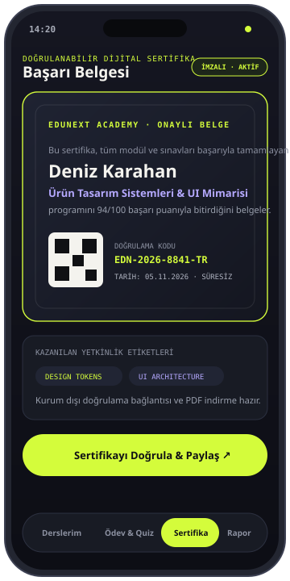
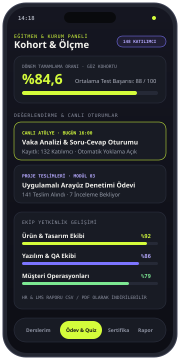

EKRAN 01 · ÖĞRENME ALANI
Odaklı ders & müfredat akışı
Bölüm işaretli video oynatıcı, indirilebilir çalışma kaynakları ve bir sonraki modülü açan ara kontrol testleri.

Kurumsal akademiler, mesleki gelişim programları ve bağımsız eğitim toplulukları için video/canlı ders akışını, modül sonu değerlendirmelerini ve QR kodla doğrulanabilir dijital sertifikaları tek bir öğrenme ortamında birleştirir.

Klasik eğitim panelleri çoğunlukla hantal klasör listelerinden ibarettir. EduNext; katılımcıyı yormayan odaklanmış bir ders deneyimi sunarken, eğitmen ve kurum yöneticilerine hangi ekibin hangi yetkinliği gerçekten kazandığını net verilerle gösterir.
EduNext’in öğrenme deneyimini, kohort yönetimini ve dijital belge doğrulamasını örnek verilerle gösteren üç temel ekranı.
Bölüm işaretli video oynatıcı, indirilebilir çalışma kaynakları ve bir sonraki modülü açan ara kontrol testleri.

Canlı atölye yoklaması, ödev teslim kuyruğu ve departman/ekip bazlı tamamlama oranları.
Baraj puanını geçen katılımcılar için benzersiz seri kodlu, kurum dışından da doğrulanabilir dijital başarı belgesi.
Görsellerdeki kurs başlıkları, katılımcı adları ve puanlar tanıtım amacıyla oluşturulmuş örnek verilerdir.
Kurum içi oryantasyondan sertifikalı uzmanlık programlarına kadar esnek müfredat kurgusu.
Asenkron video dersler, canlı atölye takvimi, ders notları ve ek materyallerin adım adım ilerleyen müfredat kurgusu.
Modül geçiş barajları, çoktan seçmeli sınavlar ve eğitmen geri bildirimli proje teslim akışları.
Programı tamamlayan kullanıcılar için otomatik oluşturulan, QR ve seri numarasıyla teyit edilebilir sertifika altyapısı.
Bireysel izleme yüzdeleri, sınav başarı ortalamaları ve İK/yönetim ekipleri için dışa aktarılabilir gelişim raporları.
EduNext, kurumların kendi marka kimliğiyle (white-label) veya bulut tabanlı akademi olarak yapılandırılabilir.
Müfredat oluşturucu, ilerleme takibi, barajlı testler ve otomatik dijital sertifika üretimi.
Canlı webinar yoklama senkronizasyonu ve ders içeriklerinde hızlı kavram arama.
Şirket içi tek oturum açma (SSO) ve departman bazlı zorunlu eğitim atama otomasyonu.
Kurum içi akademi, müşteri eğitimi veya sertifikalı eğitim programın için EduNext’i nasıl uyarlayabileceğimizi konuşalım.